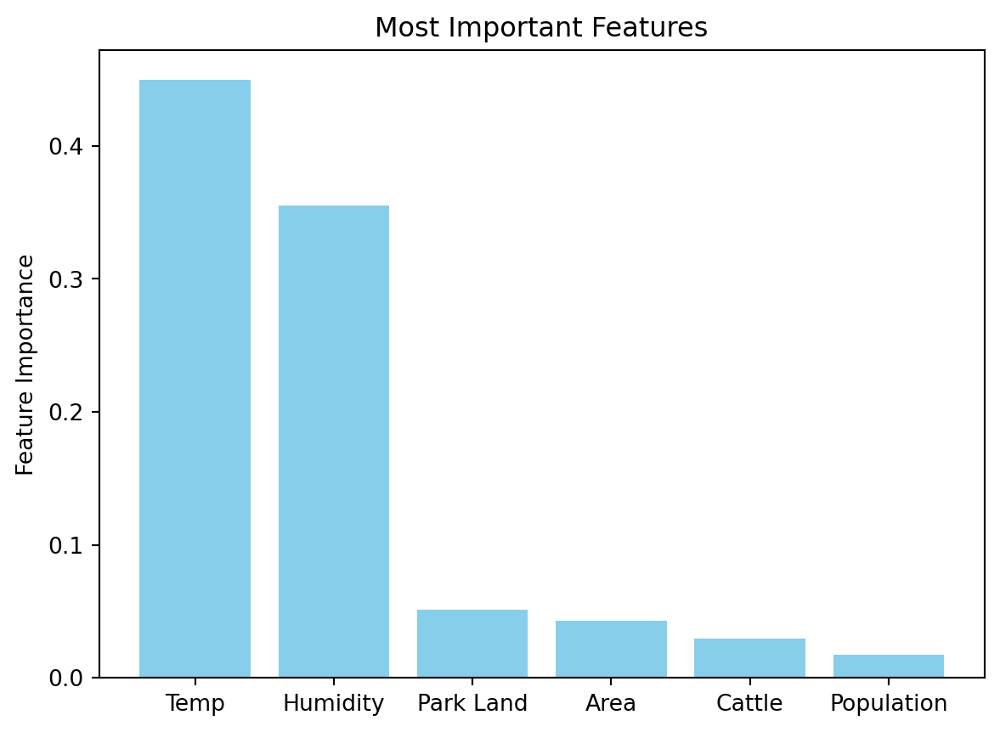

Cohen Kappa Score: 0.4465850259451445
Accuracy: 0.723462166575939Results Machine Learning Scikit-Learn
Ultimately, we want to see which variables have the greatest impact on AQI. To do this we perform a machine learning analysis and create a prediction algorithm. As the AQI is defined by the four criteria gasses and particulate matter (PM10 and PM2.5), those should not be included in the algorithm. Thus we start with all the other variables.
After data is cleaned, we are left with a total of eighteen cities across the country with a total metropolitan area population of greater than one million. To perform the ML prediction algorithm, AQI will be predicted. We will use existing AQI cateogories as classifiers. A feature selector is run on the set of all variables except for the six that define AQI (CO, NO2, O3, SO2, PM10, PM2.5). This chooses the best predictors of the dependent variable AQI.
Features Selected in Initial Model:
- City
- Month
- Population
- City Area
- Park Area
- Temperature
- Humidity
- Cattle
In pre testing, it was found that a Random Forest Model performed the best on this dataset. Therefore, this model type is used in all models.
An initial Random Forest Model run with the selected features returns the following Cohen Kappa score and accuracy:

Looking only at Cohen Kappa score and accuracy, this seems like a good prediction model. However, the confusion matrix shows the data’s skew, centered around the 0-100 range. Therefore, more bins and bin size combinations are tested in order to provide a more meaningful prediction.
After further testing the following bins were decided on:
- 0-25
- 26-50
- 51-75
- 76-100
- 101-200
- 201-500
As bins are made smaller, predictions become far less accurate. This bin size serves as a good balance between having enough bins to generate conclusions and maintaining decent accuracy. Different bin sizes also lead to different features being selected. The following features will be present in the final model:
- City
- Population
- City Area
- Park Area
- Temperature
- Humidity
- Cattle
Hyperparameter optimization will be done to further improve the model. A randomized search is run with 100 iterations. The following hyperparameters are optimized:
- Max Categories
- Min Frequency
- Max Depth
- Max Features
- Min Samples Leaf
- Min Samples Split
- Num Estimators
- Bootstrap
Table 9999 below shows the selected hyperparameters.
| Parameter | Value | |
|---|---|---|
| 0 | RF_model__bootstrap | True |
| 1 | RF_model__max_depth | 8 |
| 2 | RF_model__max_features | None |
| 3 | RF_model__min_samples_leaf | 3 |
| 4 | RF_model__min_samples_split | 6 |
| 5 | RF_model__n_estimators | 131 |
| 6 | aqi_transformer__categories__max_categories | 27 |
| 7 | aqi_transformer__categories__min_frequency | 2 |
Table 9999: Selected Hyperparameters following hyperparamenter optimization
Using these hyperparameters, we reach an accuracy of over 70%.
Cohen Kappa Score: 0.4677284124701423
Accuracy: 0.718562874251497
We can use this model for the prediction of AQI, exploring the features that predict it, and use that to generate conclusions for what variables or systems should be addressed.
Below, Table 111111 shows a classification report of the model. Support represents the amount of data points total in that bin. We can see that AQI groups with more data tend to be more accurate (higher f1-score). This makes sense as the model has more of this data to train on. To make the model more accurate, more data from AQI values outside this 26-200 range will need to be collected.
| precision | recall | f1-score | support | |
|---|---|---|---|---|
| 0-25 | 0.000000 | 0.000000 | 0.000000 | 5.0 |
| 26-50 | 0.788215 | 0.873226 | 0.828546 | 1057.0 |
| 51-75 | 0.618881 | 0.588040 | 0.603066 | 602.0 |
| 76-100 | 0.377358 | 0.185185 | 0.248447 | 108.0 |
| 101-200 | 0.560976 | 0.383333 | 0.455446 | 60.0 |
| 201-500 | 0.000000 | 0.000000 | 0.000000 | 5.0 |
(Table 111111: Final Model Classification Report)
We can also take a look at which features end up being most influential in the model. Below figure 1414 shows Temperature and Humidity being by far the most influential variables in the model. However, temperature and humidity are not variables we can directly impact easily, and therefore, the four other variables are where we should put our efforts.

(Figure 1414: Feature Importance of Selected Variables in Final Model)